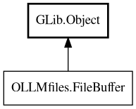

FileBuffer
Object Hierarchy:

Description:
public interface FileBuffer : Object
Interface for file buffer operations.
Provides a unified interface for accessing file contents in OLLMchat, whether in GUI contexts (using GTK SourceView buffers) or non-GUI
contexts (using in-memory buffers). This architecture ensures consistent file access patterns across the application while maintaining
separation between GUI and non-GUI code.
The buffer system provides:
- Unified Interface: Same API for GTK and non-GTK contexts
- Type Safety: No set_data/get_data - buffers are properly typed
- Separation of Concerns: GUI code in liboccoder, non-GUI code in libocfiles
- Memory Management: Automatic cleanup of old buffers
- File Tracking: Automatic last_viewed timestamp updates
- Backup System: Automatic backups for database files
- Modtime Checking: GTK buffers auto-reload when files change on disk
Buffers are stored directly on File objects via the buffer property. Each File object has at most one buffer instance, created lazily
when needed. Buffer type depends on BufferProvider implementation (GTK vs non-GTK).
Line Numbering
All buffer methods use 0-based line numbers internally. External APIs and user-facing operations use 1-based line numbers. Tools must
convert between 1-based (user input) and 0-based (buffer API).
Example:
// User provides: start_line=6, end_line=15 (1-based)
// Convert to 0-based for buffer API
int start = start_line - 1; // 5
int end = end_line - 1; // 14
var snippet = file.buffer.get_text(start, end);
All known implementing classes:
Content:
Properties:
Methods:
- public abstract async void apply_edits (ArrayList<FileChange> changes) throws Error
Efficiently apply multiple edits to the buffer.
- protected async void create_backup_if_needed ()
Internal method: Create backup if file is in database.
- public abstract void get_cursor (out int line, out int offset)
Get the current cursor position.
- public abstract string get_line (int line)
Get the content of a specific line.
- public abstract int get_line_count ()
Get the total number of lines in the buffer.
- public abstract string get_selection (out int cursor_line, out int cursor_offset)
Get the currently selected text and cursor position.
- public abstract string get_text (int start_line = 0, int end_line = -1)
Get text from buffer, optionally limited to a line range.
- public abstract async string read_async () throws Error
Read file contents asynchronously and update buffer.
- protected async string read_async_real () throws Error
Internal method: Read file from disk and update last_viewed timestamp.
- public abstract async void sync_to_file () throws Error
Sync current buffer contents to file (GTK buffers only).
- protected void update_file_metadata_after_write ()
Internal method: Update file metadata after writing.
- public abstract async void write (string contents) throws Error
Write contents to buffer and file on disk.
- public async void write_real (string contents) throws Error
Write contents to file on disk (sync buffer to file).
- protected async void write_to_disk (string contents) throws Error
Internal method: Write contents to file on disk.
Inherited Members:
All known members inherited from class GLib.Object
- @get
- @new
- @ref
- @set
- add_toggle_ref
- add_weak_pointer
- bind_property
- connect
- constructed
- disconnect
- dispose
- dup_data
- dup_qdata
- force_floating
- freeze_notify
- get_class
- get_data
- get_property
- get_qdata
- get_type
- getv
- interface_find_property
- interface_install_property
- interface_list_properties
- is_floating
- new_valist
- new_with_properties
- newv
- notify
- notify_property
- ref_count
- ref_sink
- remove_toggle_ref
- remove_weak_pointer
- replace_data
- replace_qdata
- set_data
- set_data_full
- set_property
- set_qdata
- set_qdata_full
- set_valist
- setv
- steal_data
- steal_qdata
- thaw_notify
- unref
- watch_closure
- weak_ref
- weak_unref